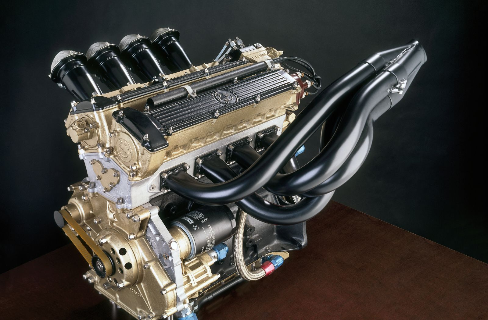

A Brief History of Formula League
-
Old Machine Press - Aircraft
1946-1950
The continuation of pre-WWII supercharged engines
Formula One was first defined in 1946 by the Commission Sportive Internationale (CSI) of the FIA, forerunner of FISA, as the premier single-seater racing category in worldwide motorsport to become effective in 1947. This new "International Formula" was initially known variously as Formula A, Formula I, or Formula 1 with the corresponding "Voiturette" formula being titled Formula B, Formula II, or Formula 2
-
The First Mercedes F1 Car
1950-1957
The Era of factory Italian and Mercedes front-engine cars
The Motorcycle World Championships was introduced in 1949. In 1950, the FIA responded with the first ever official World Championship for Drivers. The championship series, to be held across six of the 'major' Grands Prix of Europe
-
John Surtees (Ferrari) at the 1964 British Grand Prix
1962–1967
Anglophone drivers and 1.5-litre engines
In 1962, the Lotus team ran the Lotus 25 powered by the new Coventry-Climax FWMV V8 engine. The car had an aluminium sheet monocoque chassis instead of the traditional spaceframe design. This proved to be the greatest technological breakthrough since the introduction of mid-engined cars
-
F1 Ferrari car in Germany Fotos 1976
1968–1976
The DFV engine, 12-cylinder engines and the arrival of sponsorship, safety and aerodynamics
In 1968, Lotus lost its exclusive right to use the DFV. McLaren built a DFV-powered car and a new force appeared on the scene when Ken Tyrrell entered his team using Cosworth-powered French Matra chassis driven by ex-BRM Jackie Stewart as lead driver.
-

1350 HP Turbocharged four cylinder
1983–1988
1.5-litre turbo-charged engines
After nearly 50 years the power achieved by the turbocharged cars could finally match the 640 hp (477 kW) produced by the supercharged 1937 Mercedes-Benz W125, without a huge consumption of special fuel. By 1986, some engines were producing over 1,350 bhp (1,010 kW) in short bursts in qualifying
-
1996 Canadian Grand Prix
1995–1999
3-litre engines
by 1995 things had settled down somewhat. The downgraded 3-litre formula had no effect of the domination of the Renault V10, and Schumacher took his second Drivers' title, and Benetton their first Constructors' title, with relative ease, defeating the Williams team of Hill
-
2005 USA Grand Prix
2000-2008
V10 engines and 2.4-litre V8 engines
After the banning of turbocharged engines in 1989, V10 became the most popular engine configuration in Formula One, because it offered the best compromise between power and fuel consumption.
2006 was the last season with two tyre manufacturers: Japanese manufacturer Bridgestone and French company Michelin. In December 2005, the FIA announced that from the 2008 season, there would be only one tyre-supplier.
-

Mercedes AMG F1 W09 EQ Power+
2014–2022
1.6-litre turbocharged V6 hybrid power units
Formula One entered its second turbocharged era in 2014. Australia was the location of the end of the first era. All cars entering any Formula One championship race must run with 1.6-litre single turbocharged 6-cylinder engines with a rev limit of 15,000 rpm and maximum fuel flow of 100 kg/hr. New car regulations will also be enforced, and the minimum weight regulations will be raised from 642 kg (1,415 lb) to 690 kg (1,521 lb). Ferrari, Mercedes and Renault produced engines from 2014 with Honda producing engines from 2015
Frequently Asked Questions
Can drivers listen to music during a race?
While it is true that listening to music while racing is productive, Formula 1 drivers cannot listen to music while racing or driving a Formula machine. solely because the music distracts the drivers as a consequence prevents them from concentrating on the race.
What type of sports class is Formula 1?
is the highest class of international racing for open-wheel single-seater formula racing cars sanctioned by the Fédération Internationale de l'Automobile (FIA).
Who owns F1 Racing?
Liberty Media, It was bought by Liberty Media in 2017.
How much physical contact is allowed between cars without a penalty being called?
Most of the time those are just racing incidents and no penalty is applied. However if one car collides directly with another, the stewards will come up with an acceptable penalty for that driver and their team.